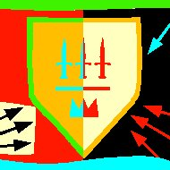

Forums galactiques > Assemblée Galactique : diplomatie officielle > Alliance U.F.H.
Pages : 1
| ricola Respect diplomatique : 267 15/11 ETU 18:56 | Score : 7 Détails
Ricola s'approcha du pupitre et pris la parole Origine bonjour, Dans le cadre de ses intentions de paix durable, et après délibérations de ses dirigeants, L'U.F.H. est en mesure de proposer à certaines coalitions le traité d'alliance suivant: - pacte de non agression entre nos deux coalitions. - pacte de non agression entre nos commandants séjournant dans le même système. - en cas de litige même militaire entre deux commandants, tentative du règlement du conflit par la voie diplomatique. - possibilité d'échanger des informations sincères et véritables entre les deux coalitions, dans les domaines diplomatiques, et militaires notamment. - création d'un courant commercial privilégié entre les deux coalitions. - possibilité au besoin d'action diplomatique conjointe. - possibilité de créer une force d'action rapide ou d'interposition militaire, et de coordonner des actions militaires offensives ou défensives pour défendre les intérêts des deux coalitions ou de la Galaxie. - possibilité pour une coalition de soutenir militairement ou diplomatiquement l'autre coalition en cas d'agression militaire de cette dernière (la décision finale appartient à chaque contrainte). - possibilité pour chaque commandant des deux coalitions de mener des actions conjointes (commerciales ou militaires) pourvu que l'intérêt général de chaque coalition ou des deux coalitions ne soit pas contraire. - Priorité reste toutefois donnée aux opérations ou aides entre les commandants de la même coalition. - Echange d'informations pour lutter contre l'espionnage. - Chaque coalition reste toutefois maître de son développement, de son intérêt général, de sa stratégie, de sa diplomatie et de ses actions militaires. Nous invitons les signataires des coalitions concernées de bien vouloir confirmer leur alliance à L'U.F.H. en paraphant ce traité ici-même. De même, nous demandons aux commandants qui ne se seraient pas vu envoyé un X-Com de s'abstenir de toutes grivoiseries, et nous contacter pour une étude de leur demande, toutes les demandes seront étudiées avec soin et une réponse leur sera alors rendue. ++Commandant Ricola++Porte Parole mandaté par l'U.F.H.++ | ||
| Macastril Respect diplomatique : 773 15/11 ETU 19:25 | Score : 7 Détails Le commandant Macastril se leva de l'hémicycle et s'approcha du pupitre de Ricola. Il portait entre ses bras un coufin, duquel dépassaient de petites mains qui s'égitaient dans le vide. Il était suivi du commandant Judayan, diplomate officiel de la coalition Planitia, et de la commandante Yulée, mère de son enfant.
C'est au nom de Planitia, et en tant que fondateur, qu'il allait maintenant signer le pacte. Les pourparlers préliminaires s'étaient correctement déroulés, il fallait maintenant signer officiellement l'acte. Quand il fut face au pupitre, il y posa la main. Moi, Macastril, je signe officiellement, au vu et au su de tous ce traité, que j'estime juste et équitable. Mon geste engage Planitia pour une période indéfinie, et jusqu'à ce que le pacte soit rompu, de façon unilatérale par une des deux partie ou de façon entendue par les deux parties concernées. J'engage, par cette signature, la totalité des commandants de Planitia et leurs actions, leur souveraineté et leurs troupes dans le pacte. Je reconnais ici ma responsabilité personnelle pour le cas où un Planitien viendrait à violer ledit pacte. Je considère comme acquis que l'UFH fait également sienne cette position et ces engagements, en vertu de l'équitabilité du traité. - pacte de non agression entre nos deux coalitions. - pacte de non agression entre nos commandants séjournant dans le même système. - en cas de litige même militaire entre deux commandants, tentative du règlement du conflit par la voie diplomatique. - possibilité d'échanger des informations sincères et véritables entre les deux coalitions, dans les domaines diplomatiques, et militaires notamment. - création d'un courant commercial privilégié entre les deux coalitions. - possibilité au besoin d'action diplomatique conjointe. - possibilité de créer une force d'action rapide ou d'interposition militaire, et de coordonner des actions militaires offensives ou défensives pour défendre les intérêts des deux coalitions ou de la Galaxie. - possibilité pour une coalition de soutenir militairement ou diplomatiquement l'autre coalition en cas d'agression militaire de cette dernière (la décision finale appartient à chaque contrainte). - possibilité pour chaque commandant des deux coalitions de mener des actions conjointes (commerciales ou militaires) pourvu que l'intérêt général de chaque coalition ou des deux coalitions ne soit pas contraire. - Priorité reste toutefois donnée aux opérations ou aides entre les commandants de la même coalition. - Echange d'informations pour lutter contre l'espionnage. - Chaque coalition reste toutefois maître de son développement, de son intérêt général, de sa stratégie, de sa diplomatie et de ses actions militaires. Commandant Chris Macastril, fondateur de le Seconde Planitia, Le 15 novembre. Macastril, après avoir signé le pacte, se recula. C'était à présent au commandant Judayan de parler pour Planitia. Le gamin émit un léger gloussement. Lààààààààààà... Calme, le sac à lait. | ||
| ocean Respect diplomatique : 708  15/11 ETU 19:35 | Score : 4 Détails Commandant Macastril
Je me réjouis de cette alliance officielle entre nos deux coalitions qui sera, sans aucune doute, pérenne et fructueuse Bienvenue à votre délégation, qui porte son avenir en son sein | ||
| Solon Respect diplomatique : 412 15/11 ETU 21:07 | Score : 6 Détails Solon entra dans l'assemblée. Il était entouré de plusieurs de ses soldats, les temps n’étaient plus surs, beaucoup rêvaient de le voir tomber. Il s'installa sur le pupitre.
Bonsoir à toutes et à tous. C'est avec une grande joie que j'officialise aujourd'hui les affinités que j'ai avec les Suisses depuis plusieurs semaines. J'espère que cette alliance durera infiniment et qu'elle permettra à Origine et moi même d'avancer dans un droit chemin. Solon s’approcha de la table ou était posé le traité, sortit sont plus beau stylo et apposa sa signature sur le document : - pacte de non agression entre nos deux coalitions. - pacte de non agression entre nos commandants séjournant dans le même système. - en cas de litige même militaire entre deux commandants, tentative du règlement du conflit par la voie diplomatique. - possibilité d'échanger des informations sincères et véritables entre les deux coalitions, dans les domaines diplomatiques, et militaires notamment. - création d'un courant commercial privilégié entre les deux coalitions. - possibilité au besoin d'action diplomatique conjointe. - possibilité de créer une force d'action rapide ou d'interposition militaire, et de coordonner des actions militaires offensives ou défensives pour défendre les intérêts des deux coalitions ou de la Galaxie. - possibilité pour une coalition de soutenir militairement ou diplomatiquement l'autre coalition en cas d'agression militaire de cette dernière (la décision finale appartient à chaque contrainte). - possibilité pour chaque commandant des deux coalitions de mener des actions conjointes (commerciales ou militaires) pourvu que l'intérêt général de chaque coalition ou des deux coalitions ne soit pas contraire. - Priorité reste toutefois donnée aux opérations ou aides entre les commandants de la même coalition. - Echange d'informations pour lutter contre l'espionnage. - Chaque coalition reste toutefois maître de son développement, de son intérêt général, de sa stratégie, de sa diplomatie et de ses actions militaires. Commandant Solon, détenteur actuel du gouvernement et Doyen du mouvement Red. Apres avoir relu le pacte, il rangea son stylo dans un sourire et sortit de l’Assemblée | ||
| ocean Respect diplomatique : 708 15/11 ETU 21:13 | Score : 3 Détails Mon cher Solon et vieil ami
Merci pour votre confiance et notre coopération doit continuer à être sincère et durable |
Pages : 1
Forums galactiques > Assemblée Galactique : diplomatie officielle > Alliance U.F.H.